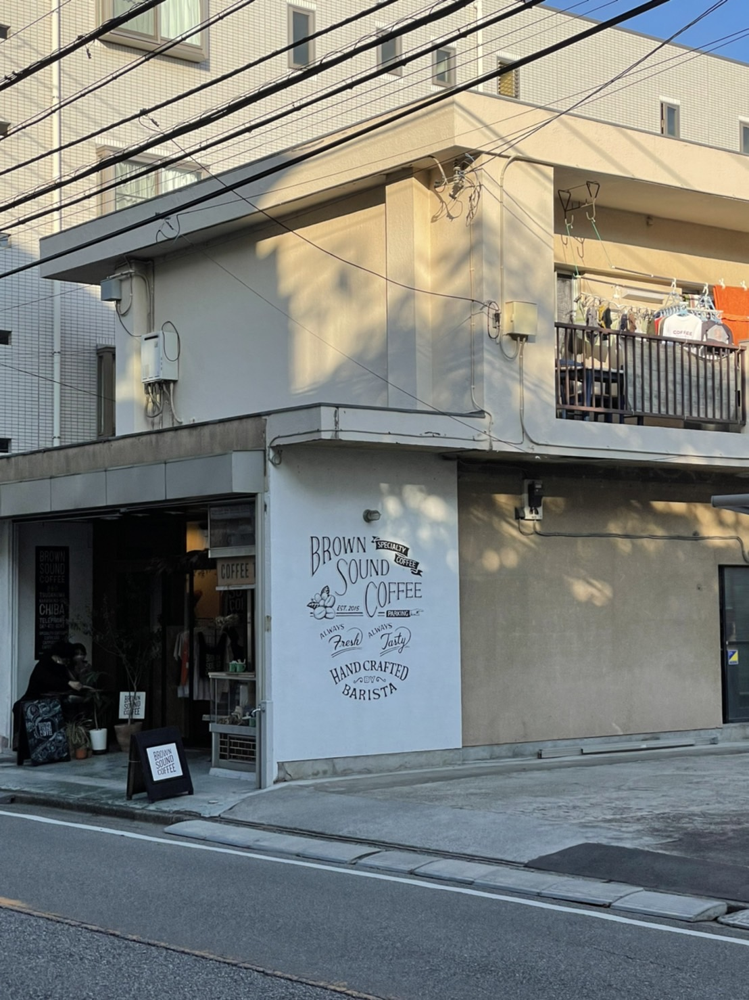
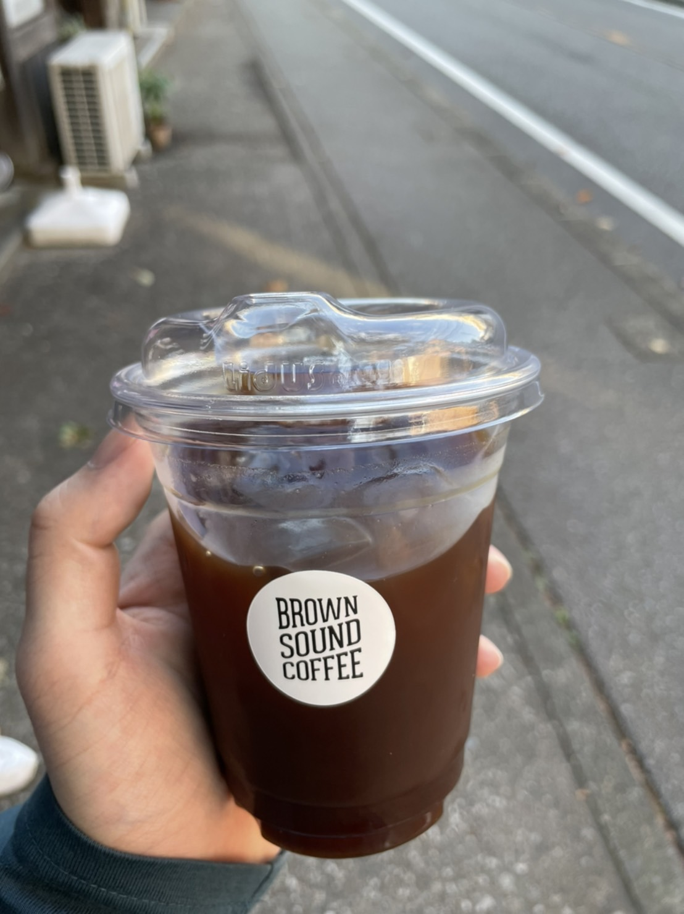
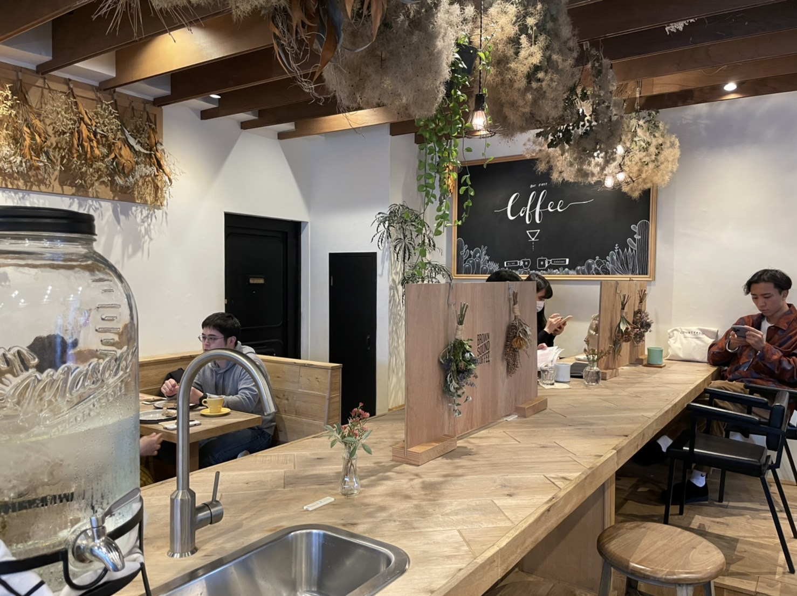
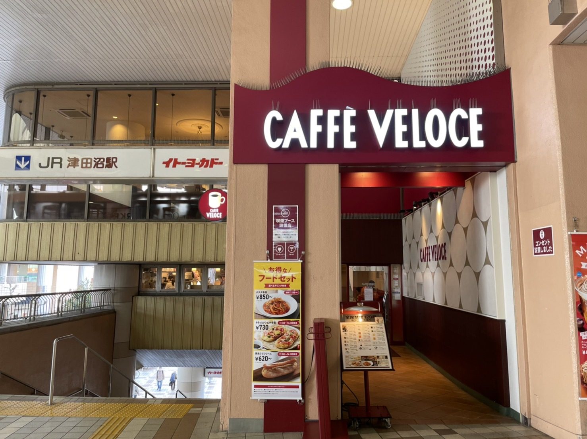
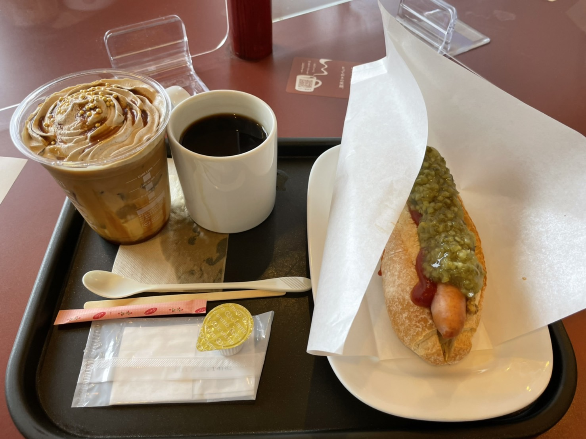
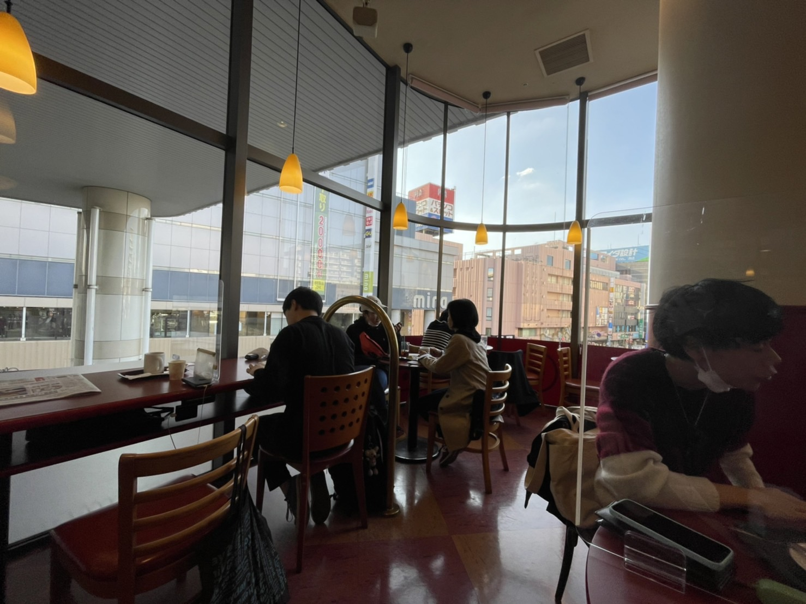
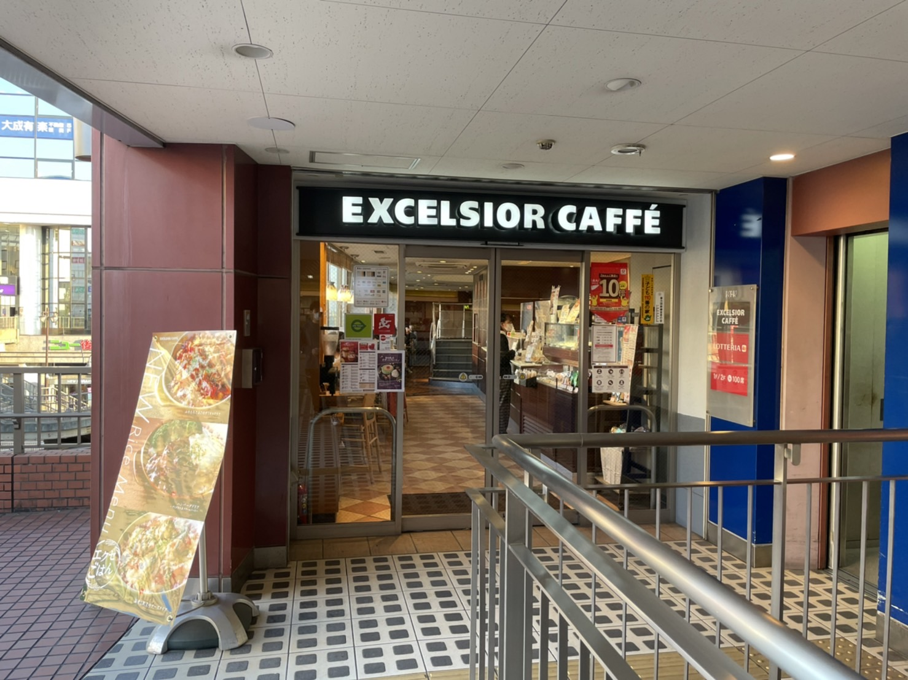
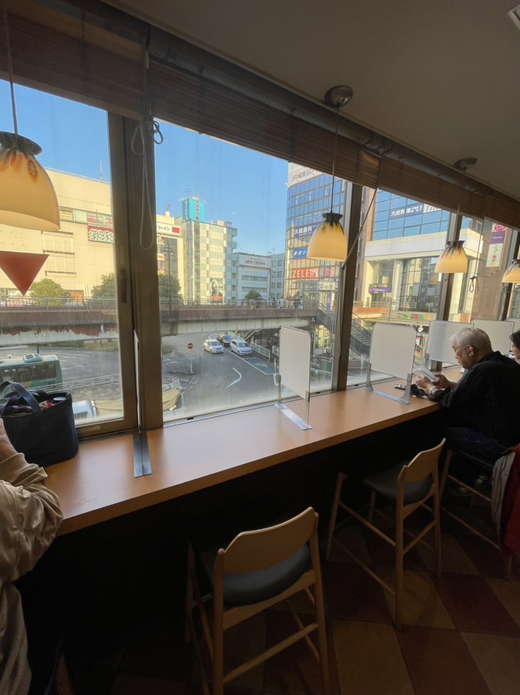
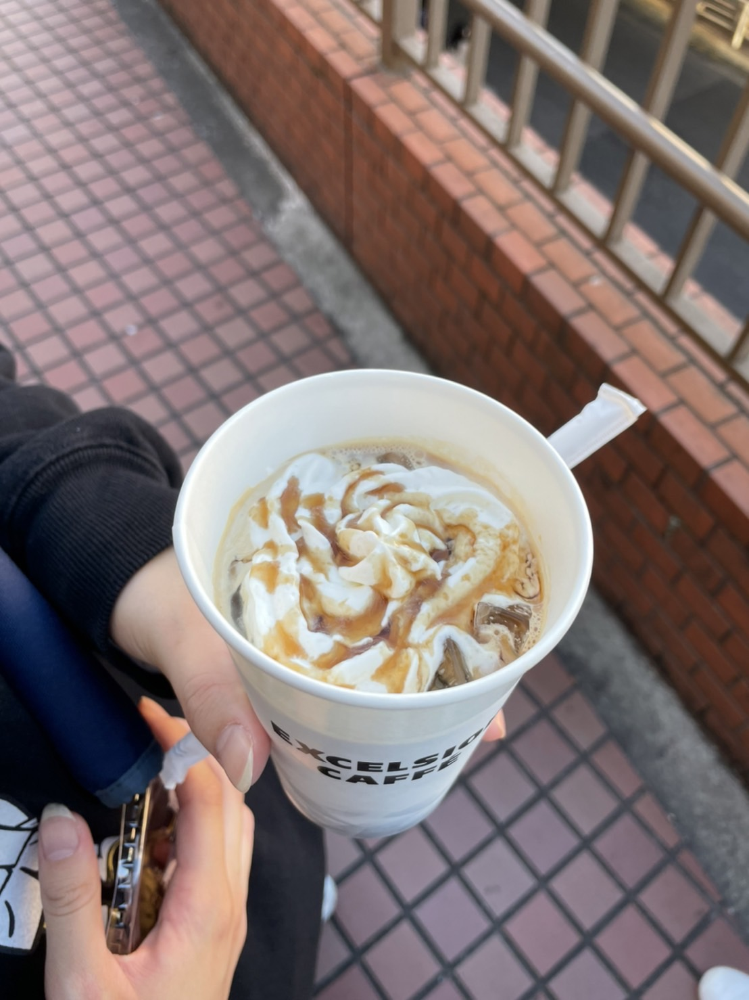

津田沼駅周辺の
おすすめカフェ3選
BROWN SOUND COFFEE
おしゃれで写真映えするカフェ



津田沼駅南口徒歩5分
昼夜￥〜1000
火水金11:00〜17:00 土日8:00〜10:00、14:00〜17:00 月木休
千葉県習志野市谷津2-8-11
お好みの豆を選べることができる。
一番高価なパカマラ豆は普通のコーヒーにはないほのかな酸っぱい味で余韻がある。
Cafe Veloce
待ち時間の少ないチェーンカフェ



津田沼駅北口徒歩4分
昼夜￥〜500
日〜火6:45〜23:00 木〜月6:45〜23:00 水7:00〜23:00
〒275-0016 千葉県習志野市津田沼１丁目１０−３４ 番街店舗２階
注文を用意するスピードが速い
2階の窓からの眺めがいい
商品の価格が安い
EXCELSIOR CAFFE
電車を降りてすぐに楽しめるカフェ



津田沼駅北口徒歩30秒
昼夜￥〜500
土〜日7:00〜21:00 月〜金6:30〜21:00
〒275-0016 千葉県習志野市津田沼１丁目１−１ ３Ｆ・４Ｆ 駅北口駅ビル
駅から出なくてもコーヒーが味わえる
コーヒーとのセットメニューが豊富
商品の価格もかなり安い